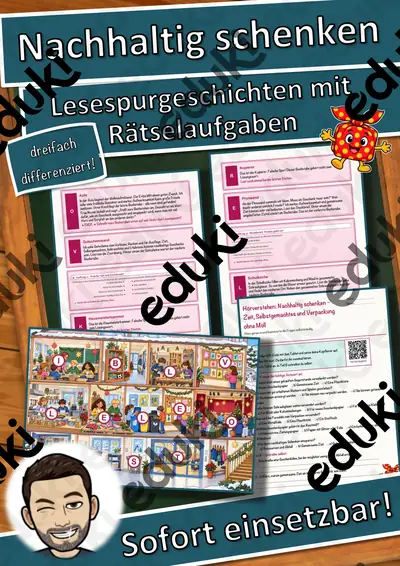
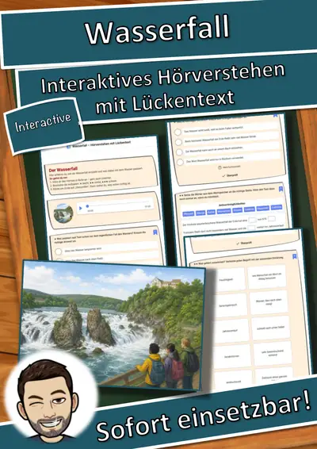

Wofür lohnt es sich zu leben? – Sinnsuche im Jugendalter – Lesespurgeschichte mit Rätselaufgaben (Klasse 8)
Wofür lohnt es sich zu leben? – Sinnsuche im Jugendalter – Lesespurgeschichte Ethik (Klasse 8)Begib dich mit deiner Klasse auf eine nachdenkliche Lesespur über die Sinnsuche! Mira und Jannik wandern auf dem Berg-Themenweg „Lebensweg": Auf der wackeligen Hängebrücke erfahren sie, wie viel Halt Freundschaft gibt, an der Almhütte, wie gut es tut, gebraucht zu werden, am Wasserfall, wie die Natur uns berührt, an der Kapelle, welche Kraft Glaube oder Überzeugungen schenken können, und an der Felsspalte, dass man an schweren Zeiten wachsen kann. Am Gipfel blicken sie auf den ganzen Weg zurück. Ihre kleine Laterne Luma ist immer dabei. Am Ende jedes Abschnitts verrät ein Hinweis den nächsten Ort auf dem Wanderplan – nur wer richtig liest und mitdenkt, findet den Weg und sammelt alle geheimen Buchstaben zum Lösungswort.
Die perfekte Lesespur für den ETHIKUNTERRICHT der Sekundarstufe I: Sie verbindet motivierendes, sinnentnehmendes Lesen mit behutsamen Gesprächsanlässen über das, was dem Leben Sinn gibt – präventiv, ermutigend und altersgerecht. Das Material ist SOFORT EINSETZBAR und in DREI DIFFERENZIERUNGSSTUFEN (leicht ★ / mittel ★★ / schwer ★★★) angelegt, sodass alle Jugendlichen einer Klasse am selben Thema arbeiten können.WICHTIG: Das komplette Material ist sowohl in FARBE als auch in SCHWARZ-WEISS enthalten – ideal zum Sparen von Druckkosten.DAS IST ENTHALTEN
- Lesespurgeschichte in 3 Niveaus (leicht, mittel, schwer)
- farbiger Wanderplan als Suchkarte
- Hörverstehen mit QR-Code zur MP3 (selbstständiges Hören mit Kopfhörern)
- vier Aufträge auf dem Weg: ein Zuordnungs-Rätsel, ein Quiz, eine Rechenaufgabe und ein Steckbrief
- Rätselseite (Wörter-Suchsel + Wissensfragen)
- Ausmalbild zum Thema
- ausführliches Lösungsblatt für die Lehrkraft
- alles zusätzlich als komplette Schwarz-Weiß-VarianteSO FUNKTIONIERT DIE LESESPURDie Jugendlichen lesen ab START, entnehmen dem Text einen Hinweis auf einen Ort am Berg, suchen ihn auf dem Wanderplan und lesen bei dieser Station weiter. An jeder richtigen Station gibt es einen Sammelbuchstaben. Eingebaute Sackgassen (Seilbahn, Kiosk, Kuhweide, Holzlager) liegen zwar am Berg, sind aber keine Stationen und dienen der Selbstkontrolle. Am Ende werden die gesammelten Buchstaben umgestellt und ergeben ein geheimes Lösungswort. (Die Lösungen sind selbstverständlich nur im Lösungsblatt für die Lehrkraft enthalten.)INHALTLICHER SCHWERPUNKTWofür lohnt es sich zu leben? Die Jugendlichen entdecken vielfältige Quellen von Sinn: Beziehungen zu Freunden und Familie, das Gefühl, gebraucht zu werden und sich zu engagieren, Kreativität, das Erleben der Natur sowie Glaube oder eine Weltanschauung. Sie lernen den moralischen Maßstab kennen, sich selbst und anderen dabei nicht zu schaden, und erkennen Warnsignale von Gruppen, die Menschen vereinnahmen wollen. Grenzsituationen wie Krankheit, Verlust oder Scheitern werden als Herausforderung verstanden, an der man wachsen kann. Und ganz wichtig: Wer einmal keine Richtung sieht, muss den Weg nicht allein gehen – Vertrauenspersonen und Beratungsstellen helfen.ABGEDECKTER LEHRPLAN (Klasse 8, Ethik)
- Ethik (LehrplanPLUS Bayern) – „Sinnsuche" (Gymnasium Klasse 8) und „Sinnvoll leben" (Realschule Klasse 8): eine Vielfalt von Möglichkeiten erkennen, Sinn für das eigene Leben zu finden, dabei moralische Maßstäbe berücksichtigen, Gefahren vereinnahmender Gruppen erkennen und sich gruppendynamischen Prozessen widersetzen sowie Grenzsituationen als Herausforderung und Chance zur persönlichen Weiterentwicklung sehen.
- Deutsch – Lesen mit Texten und Medien umgehen: Lesestrategien anwenden, Texten gezielt Informationen entnehmen, sinnentnehmend und selektiv lesen; Zuhören: einem Sachhörtext konzentriert folgen (Hörverstehen mit MP3).
- Mathematik – Rechnen im Sachzusammenhang.
- Fächerübergreifend / Kompetenzen: Persönlichkeitsbildung, Prävention, Resilienz, genaues Lesen und Prüfen, kreatives Gestalten (Ausmalbild).
Geeignet für Freiarbeit, Stationenlernen, Vertretungsstunden, Wochenplan, Besinnungstage und Homeschooling. Klassenstufe 8 (differenziert einsetzbar auch in Klasse 7 und 9).
Ähnliche Materialien

Älter werden – Rechte und Pflichten im Jugendalter – Lesespurgeschichte mit Rätselaufgaben (Klasse 8)

Die Hängebrücke – Lesespurgeschichte mit Rätselaufgaben (Klasse 8)

Der Wasserfall – Lesespurgeschichte mit Rätselaufgaben (Klasse 8)

Nachhaltig schenken – Zeit, Selbstgemachtes und Verpackung ohne Müll – Lesespurgeschichte mit Rätselaufgaben (Klasse 6)

Wasserfall – Hörverstehen mit Lückentext (interaktiv)

Wasserfall Lückentext mit Wortspeicher Hörverstehen und Suchsel

Freundschaft Lückentext mit Wortspeicher Hörverstehen und Suchsel